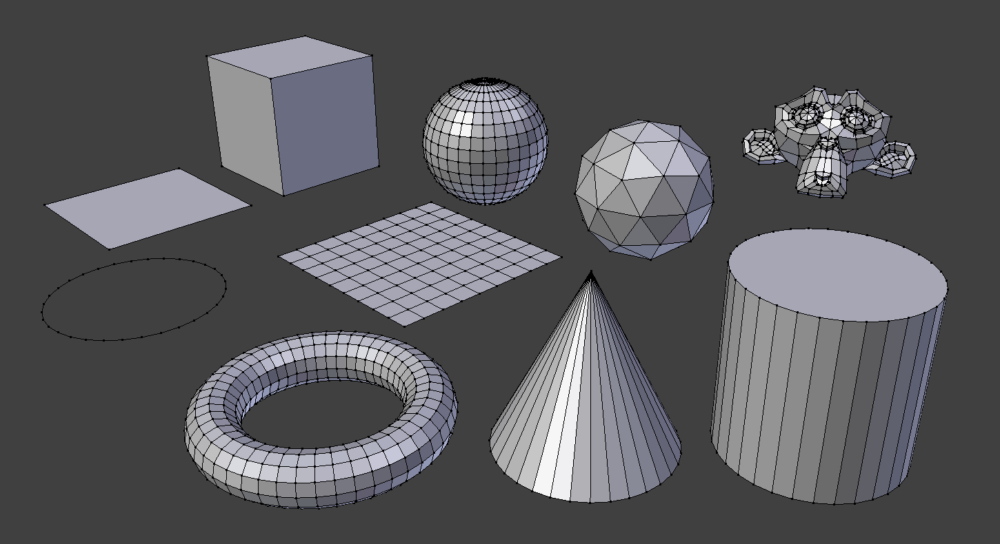

Mesh Primitives¶
Tham khảo
- Mode:
Object Mode, Edit Mode
- Menu:
- Shortcut:
Shift-A
Mesh là loại object phổ biến nhất được dùng trong các scene 3D. Blender cung cấp nhiều mesh primitive tích hợp sẵn đóng vai trò là điểm khởi đầu cho việc modeling. Các primitive này có thể được thêm trong cả Object Mode lẫn Edit Mode, và chúng xuất hiện tại vị trí của 3D Cursor.

Các mesh primitive chuẩn của Blender.¶
Mẹo
Các mesh phẳng như Plane, Circle và Grid có thể trở thành ba chiều bằng cách di chuyển các vertex ra khỏi mặt phẳng ban đầu của chúng.
Ghi chú
Các primitive bổ sung có thể được bật thông qua extension add-on. Xem Tải Extension để biết thêm thông tin.
Common Options¶
Các tùy chọn này có thể được chỉ định trong panel Adjust Last Operation, panel này xuất hiện khi object được tạo. Các tùy chọn xuất hiện ở nhiều primitive gồm:
- Generate UVs
Tạo một bản unwrap UV mặc định cho geometry mới. Bản này sẽ được định nghĩa trong UV layer đầu tiên (sẽ được thêm vào nếu cần).
- Align to View, Location, Rotation
Plane¶
Plane chuẩn là một face tứ giác duy nhất được tạo từ bốn vertex, bốn edge và một face. Nó phẳng và không có độ dày, nên là một object thuần hai chiều.
Plane thường được dùng để biểu diễn các bề mặt như sàn nhà, tường, mặt bàn hoặc gương. Chúng cũng thường được dùng làm object phát (emitter), nền cho camera, hoặc cho projection mapping.
- Size
Đặt chiều rộng và chiều cao của plane (khoảng trải đầy từ cạnh này sang cạnh kia).
Xem thêm
Mesh Plane cho phép nhập một hình ảnh dưới dạng plane có texture. Kích thước của plane sẽ tự động được scale để khớp với tỷ lệ khung hình của ảnh.
Mẹo
Plane hữu ích khi làm điểm khởi đầu để modeling các tấm panel, trần nhà, mô phỏng cloth, hoặc bề mặt để sculpt. Hãy áp dụng các modifier như Subdivision Surface hay Displace để biến một plane phẳng thành geometry phức tạp.
Cube¶
Thêm một cube mesh chuẩn gồm sáu face tứ giác, tám vertex và mười hai edge. Đây là một trong những primitive cơ bản và được dùng thường xuyên nhất trong modeling, đóng vai trò điểm khởi đầu để tạo các thùng, hộp, tòa nhà hoặc đế để sculpt.
- Size
Đặt tổng chiều rộng, chiều cao và chiều sâu của cube (tức đường kính đầy đủ theo mỗi trục). Kích thước là 2 sẽ tạo ra một cube trải từ -1 đến +1 trên mọi trục.
Mẹo
Cube rất phù hợp cho hard-surface modeling và thường được dùng làm đế để áp dụng các modifier như Subdivision Surface, Boolean hay Bevel.
Circle¶
Thêm một vòng vertex 2D phẳng tạo thành xấp xỉ đa giác của một đường tròn. Primitive này hữu ích làm điểm khởi đầu cho các object hình trụ, lỗ, đầu ống, hoặc quy trình modeling dựa trên extrude.
- Vertices
Số vertex dùng để định nghĩa chu vi của đường tròn. Giá trị càng cao thì hình dạng càng mượt.
- Fill Type
Đặt cách phần tâm của đường tròn được lấp đầy:
- Triangle Fan:
Lấp đầy đường tròn bằng các face tam giác cùng chung một vertex trung tâm.
- N-gon:
Lấp đầy phần tâm bằng một face N-gon duy nhất.
- Nothing:
Không lấp đầy đường tròn; chỉ các vertex chu vi được tạo ra.
- Radius
Khoảng cách từ tâm đến rìa ngoài của đường tròn.
Quad Sphere¶
Quad sphere được tạo bằng cách subdivide một cube rồi chiếu kết quả lên một mặt cầu, do đó bề mặt được cấu thành hoàn toàn bằng các quad. Topology gần như đồng đều trên toàn bộ bề mặt, khiến nó rất phù hợp để sculpt và modeling với Subdivision Surface.
- Segments
Số face dọc theo mỗi edge của cube nền bên dưới.
- Method
Cách ánh xạ dùng để chiếu cube lên mặt cầu:
- Even Area:
Phân bố diện tích đều giữa các face, cho kích thước face đồng đều nhất.
- Even Angle:
Đặt các vertex ở các góc đều nhau, sao cho đường bao theo mỗi trục tạo thành một đường tròn chính xác. Hữu ích khi mặt cầu bị cắt đôi và được nối với các hình tròn khác như cylinder.
- Radius
Khoảng cách từ tâm đến bề mặt ngoài của mặt cầu.
UV Sphere¶
UV sphere được cấu thành từ các face tứ giác sắp xếp theo các vòng ngang và các phân đoạn dọc, cùng các triangle fan tại hai cực. Cấu trúc này phản ánh cách texture thường được ánh xạ trong 2D (do đó có tên mặt cầu "UV"), khiến nó rất phù hợp để tạo texture.
Nó giống các đường kinh tuyến và vĩ tuyến trên một quả địa cầu, điều này cũng khiến nó hữu ích cho các mô hình hành tinh hoặc các hình cầu có đường nối UV chạy từ cực này sang cực kia.
- Segments
Số phân đoạn dọc (phân chia theo kinh tuyến). Chúng giống như các đường kinh tuyến trên quả địa cầu, chạy từ cực Bắc đến cực Nam.
- Rings
Số phân đoạn ngang (phân chia theo vĩ tuyến). Chúng giống như các đường vĩ tuyến trên quả địa cầu, xếp chồng từ trên xuống dưới.
Ghi chú
Rings tương ứng với các face loop chứ không phải edge loop, nên số edge loop nhìn thấy được thực tế ít hơn một.
- Radius
Khoảng cách từ tâm đến bề mặt ngoài của mặt cầu.
Mẹo
Để có shading mượt, hãy bật Smooth Shading và áp dụng modifier Subdivision Surface.
Icosphere¶
Icosphere là mặt cầu được tạo từ các tam giác đều và có sự phân bố vertex đồng đều hơn so với UV sphere. Điều này khiến nó lý tưởng cho sculpt, simulation, hoặc các ứng dụng mà tính đều đặn của topology là quan trọng.
Nó được tạo bằng cách subdivide đệ quy các face của một icosahedron — một đa diện có 20 face tam giác.
- Subdivisions
Số bước subdivide đệ quy. Mỗi bước chia mỗi tam giác thành bốn tam giác mới, làm tăng độ phân giải của mesh theo cấp số nhân.
Subdivision Level 1 tạo ra icosahedron gốc.
Các level cao hơn làm mượt bề mặt và tăng số lượng vertex.
Cảnh báo
Việc subdivide icosphere làm tăng số vertex rất nhanh. Chẳng hạn, 10 lần subdivide tạo ra hơn 5 triệu tam giác và có thể làm Blender bị treo.
- Radius
Khoảng cách từ tâm đến bề mặt ngoài của mặt cầu.
Mẹo
Icosphere thường được dùng trong simulation, bộ phát particle và quy trình sculpt — nơi tính đồng đều và topology chỉ gồm tam giác mang lại lợi thế.
Cylinder¶
Tạo một mesh hình trụ gồm hai đầu tròn và các face dọc. Hình dạng này thường được dùng để modeling các object như tay cầm, thanh, cột và thùng.
- Vertices
Số vertex dùng để định nghĩa hai đầu tròn. Giá trị càng cao thì đường bao tròn càng mượt.
- Radius
Bán kính của hai đầu tròn cylinder, đo từ tâm đến chu vi.
- Depth
Chiều cao của cylinder theo trục Z.
- Cap Fill Type
Quyết định phần trên và phần dưới của cylinder được lấp đầy như thế nào:
- Nothing:
Không thêm nắp hai đầu. Chỉ các face bên được tạo, hình thành một ống. Hữu ích để modeling ống hoặc vật rỗng.
- N-gon:
Mỗi đầu được lấp đầy bằng một face N-gon duy nhất.
- Triangle Fan:
Mỗi đầu được lấp đầy bằng các face tam giác cùng chung một vertex trung tâm.
Cone¶
Tạo một mesh hình nón hoặc hình chóp. Hữu ích để modeling các object như gai, nón giao thông hay mũ phù thủy. Bạn cũng có thể tạo hình nón cụt (frustum) hoặc hình chóp đơn giản bằng cách chỉnh bán kính phía trên.
- Vertices
Số vertex dùng để định nghĩa đáy tròn (hoặc đáy đa giác trong trường hợp hình chóp). Giá trị càng cao thì đường cong càng mượt.
- Radius 1
Bán kính của đáy cone (vòng tròn phía dưới).
- Radius 2
Bán kính của đỉnh (vòng tròn phía trên). Giá trị 0 tạo ra cone chuẩn với đỉnh nhọn. Giá trị khác 0 cho hình dạng nón cụt (frustum).
- Depth
Chiều cao của cone theo trục Z.
- Cap Fill Type
Quyết định đáy của cone được lấp đầy như thế nào:
- Nothing:
Không thêm nắp đáy. Chỉ các face bên được tạo. Hữu ích để tạo vật chứa hở hoặc cone rỗng.
- N-gon:
Lấp đầy đáy bằng một face N-gon duy nhất.
- Triangle Fan:
Lấp đầy đáy bằng các face tam giác cùng chung một vertex trung tâm.
Mẹo
Để tạo hình chóp, đặt Vertices thành 4 và dùng N-gon hoặc Triangle Fan làm kiểu nắp. Chỉnh Radius 2 về 0 để giữ đỉnh nhọn.
Torus¶
Một primitive hình bánh donut được tạo bằng cách quay một đường tròn quanh một trục. Hình dạng này thường được dùng cho vòng, ống và các chi tiết cách điệu.
- Operator Presets
Các cài đặt torus đã lưu để tái sử dụng. Chúng được lưu dưới dạng script Python trong thư mục presets.
- Major Segments
Số segment tạo thành vòng tròn chính của torus. Có thể hiểu đây là số bước trong thao tác spin quanh trục trung tâm.
- Minor Segments
Số segment tạo thành tiết diện tròn của torus. Mỗi segment được quay quanh vòng chính.
- Dimensions Mode
Chọn phương pháp dùng để định nghĩa hình dạng và kích thước của torus:
- Major/Minor:
Định nghĩa torus bằng bán kính của vòng chính và bán kính của đường tròn tiết diện.
- Exterior/Interior:
Định nghĩa torus bằng bán kính ngoài tổng thể và bán kính của lỗ trung tâm.
- Major Radius Major/Minor
Khoảng cách từ tâm torus đến tâm của tiết diện.
- Minor Radius Major/Minor
Bán kính của đường tròn tiết diện (độ dày của vòng).
- Exterior Radius Exterior/Interior
Tổng bán kính từ tâm torus đến rìa ngoài của nó.
- Interior Radius Exterior/Interior
Bán kính của lỗ ở tâm torus.
Grid¶
Một lưới đều gồm các face tứ giác, hữu ích làm nền cho địa hình, cloth hoặc bề mặt hữu cơ. Bạn có thể tăng số lần subdivide để tạo mesh chi tiết hơn, phù hợp cho sculpt hoặc simulation.
- X Subdivisions
Số khoảng face dọc theo trục X.
- Y Subdivisions
Số khoảng face dọc theo trục Y.
- Size
Đặt chiều rộng và chiều cao của plane (khoảng trải đầy từ cạnh này sang cạnh kia).
Monkey¶
Thêm một mesh đầu khỉ cách điệu có tên "Suzanne". Suzanne là món quà từ NaN thời xưa dành cho cộng đồng, vẫn ở lại trong Blender như một "Easter egg" vui nhộn và được công nhận rộng rãi như linh vật của Blender.
Primitive này thường được dùng để thử nghiệm material, thiết lập ánh sáng và các modifier như Subdivision Surface.
Nó phục vụ mục đích tương tự các mô hình thử nghiệm nổi tiếng như Utah Teapot hay Stanford Bunny.
- Size
Điều khiển scale tổng thể của mesh.